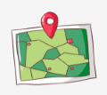
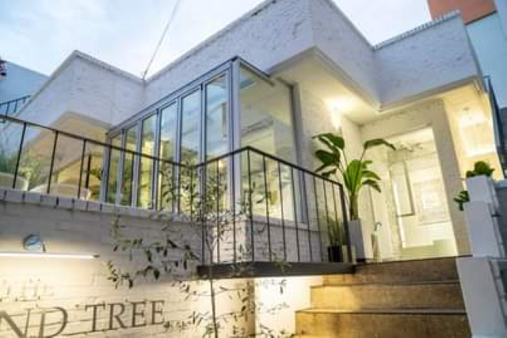

ABOUT
춘천, 카페를 담다에서는 다양한 주제별 춘천시내 카페를 추천합니다.
-

위치별 카페 보기
친구 동네에서 감성적인 카페가 어디인지 궁금하다면?
MORE
-
키워드별 카페 보기
디저트 맛집, 뷰 맛집, 특이한 커피 맛집을 찾고싶다면?
MORE
-
다양한 카페 리뷰와 사진 보기
직접 카페를 방문해본 후기와 사진들이 궁금하다면?
MORE
오늘의 카페 추천
사용자들의 후기를 엄선하여 뽑은 오늘의 카페!

음료 맛집에 분위기 맛집?! 카페 "아몬드 트리"
요즘 비싸고 뷰만 좋은데 음료나 디저트는 맛이 없다는 후기가 많은데요,
이곳은 어떤 음료를 시켜도 실패하지 않습니다!
밀크티, 코코넛딸기라떼는 정말 강추합니다
음료만 마시러 갔다가 빵굽는 냄새에 크로플과 샌드위치도 먹어보았는데,
냄새로 맡던거 그 이상이었습니다.
심지어 아몬드 트리의 스콘은 아몬드 가루로 만들어져서
더욱 고소하고 커피와 궁합이 좋답니다.
인테리어도 화이트 톤의 깔끔한 느낌이며 조명이 큰 몫을 하는 것 같아요.
작은 테이블도 있지만 안쪽에 넓은 테이블과 쇼파자리가 있어 편안하고
곳곳에 있는 콘센트들이 과제욕구를 불러일으킵니다ㅎㅎ
오늘은 아몬드 트리가서 카공 어떤가요?